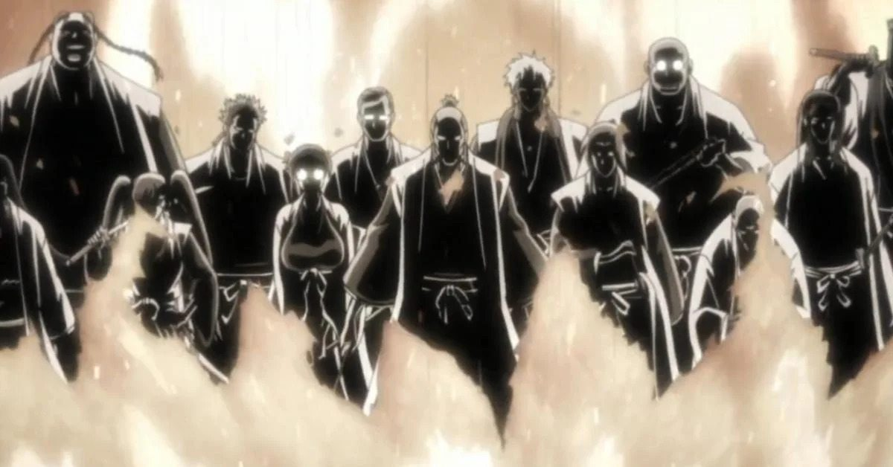

Shinigamis (Deuses da Morte no japonês literal, Ceifeiros de Almas ou Soul Reaper, na adaptação para o português ou inglês). São almas especializadas em combates que mantem o equilíbrio entre os mundos, purificando e matando os Hollows e mandando os Plueses para a Soul Society, eles vivem normalmente na Seireitei localizada na área nobre da Soul Society
